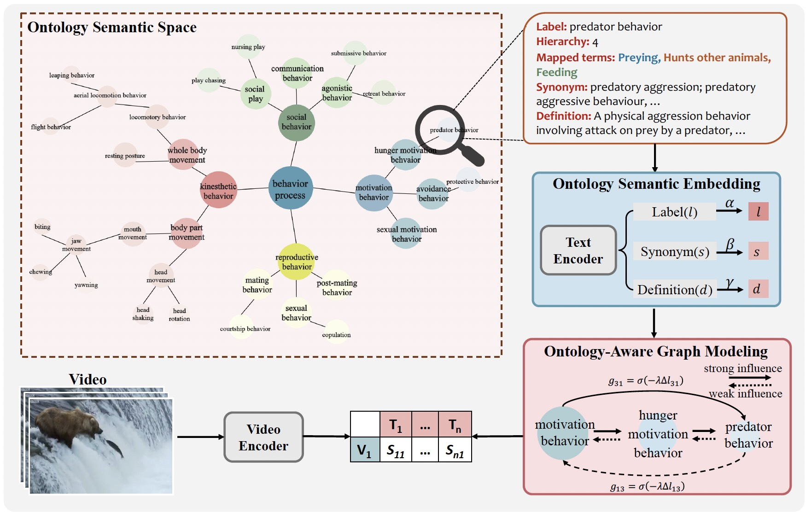
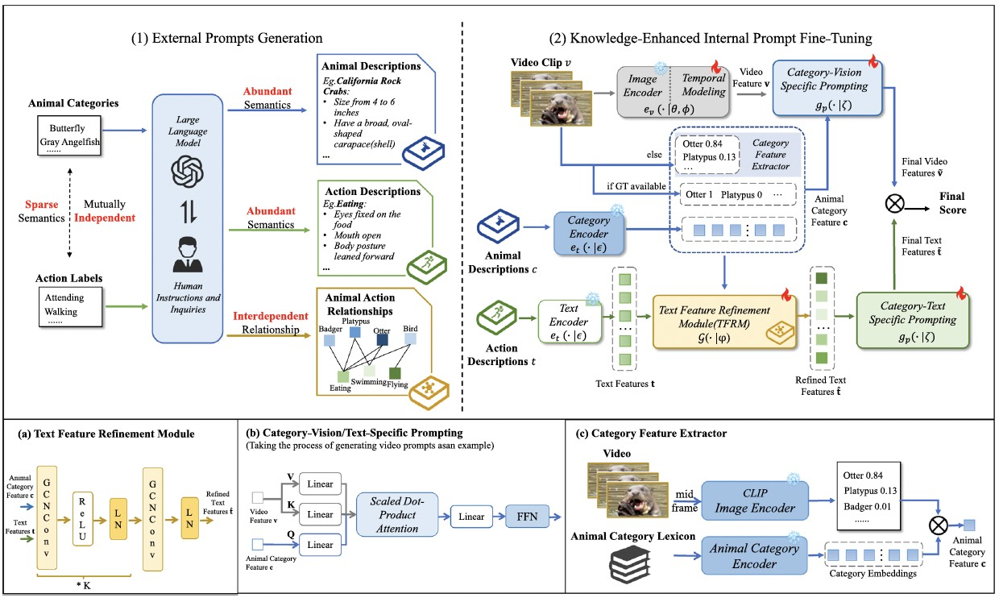
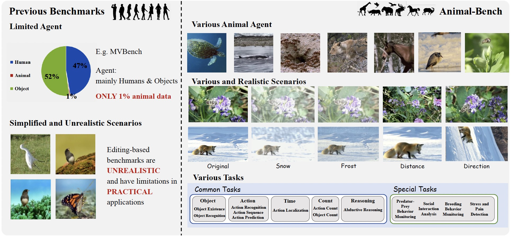
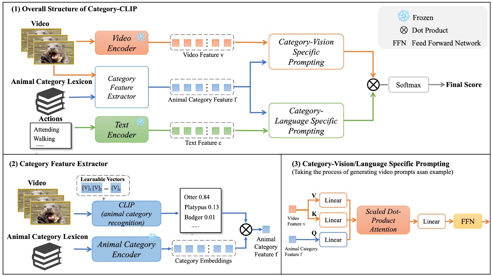

Yinuo Jing (井一诺)
I am a PhD candidate at the Pattern Recognition and Intelligent System Laboratory, School of Artificial Intelligence, Beijing University of Posts and Telecommunications.
My research interests include Multimodal Large Models, Video Understanding, and Animal Behavior Recognition.
Publications

EthoCLIP: Ontology-Enhanced Video-Language Pretraining for Animal Behavior Understanding
Yinuo Jing, Jinyan Wu, Zixi Yang, Kongming Liang, Xiatian Zhu, Zhanyu Ma.
CVPR 2026
codeAn ontology-enhanced framework for animal behavior understanding.




RO-Bench: Robustness Evaluation of Multimodal Large Models
Zixi Yang, Jiapeng Li, Yinuo Jing, Kongming Liang.
ICASSP 2026
paperEvaluates robustness using counterfactual video generation.